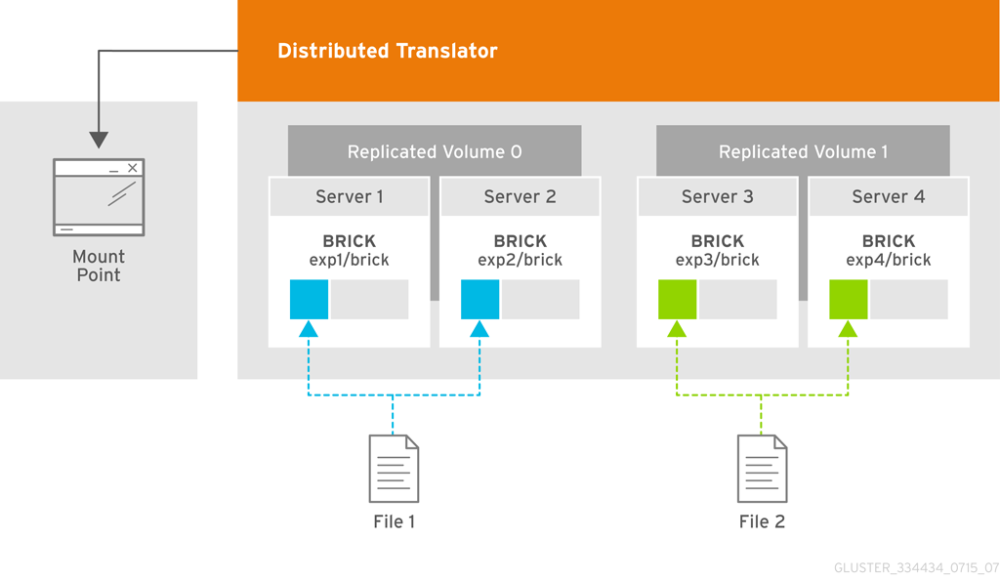
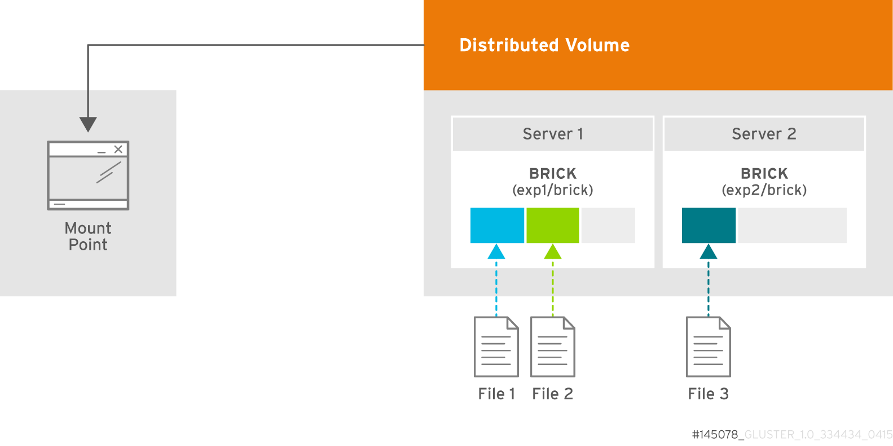

Previously integrated system
Replication mode
Used for OS/VM storage

Distributed mode
Used for bulk data

Distributed mode redundancy
Disk-level: RAID
Distributed mode
- No host-level redundancy
- Optional file-level redundancy
- Not robust against "user error"
Data Loss and recovery
- May 14: Initial data loss
- May 16: Data loss discovery
- May 17-June 3: Stage 1 recovery (on-disk)
- May 19-July 14: Stage 1.5 recovery (TSM /home)
- June 4-July 11: Stage 2 recovery (TSM priority)
- June 15-July 19: Stage 3 recovery (TSM)
- July 19-present: Stage 3 reboot (TSM)
Future backups
Dedicated backup server
- Asynchronous geo-replication
- Last 24 hours of 3 hour point in time snapshots
- Last 30 days of daily point in time snapshots
- 6 months of weekly point in time snapshots
- Very fast restore
- Real-time, usable read-only copy if primary storage fails
Backup server
- Reused hardware
- 45 Disk 4U JBOD expanders
- 90 x 4T disks
- Software
- GlusterFS Server configured as geo-replication target
- ZFS + Compression + De-duplication + snapshots
- TSM to RSF tape
FY16-17 Storage Needs
|
RCI |
HI |
CSG |
CAM |
FZ |
PCIC |
Total |
| FY1516 |
89 |
11 |
2 |
2 |
19 |
60 |
183 |
| FY1617 |
22 |
28 |
0 |
1 |
9 |
0 |
60 |
| Total |
111 |
39 |
2 |
3 |
20 |
60 |
235 |